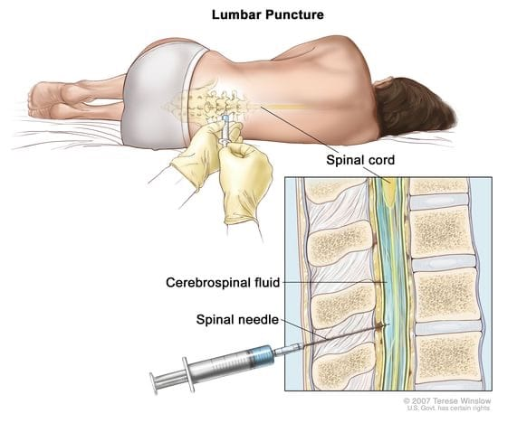

Ariana's PICU Stay

PICU Stay: April 11 - April 18, 2025
This is a bigger chunk of time than the last posts. but just trying to catch you guys up as we plan for our second month long stay in the hospital. So just jumping back in right where we left off.
After meeting with Dr. M to consent with treatment, we met Ariana in her PICU room. At this point it was around 8PM, 18 hours after learning she has AML Leukemia. Ariana was still intubated and it was very surreal seeing her. You just never can prepare yourself to see your baby hooked up to a breathing machine, with a PICC line and multiple IV pumps hooked up so that she can get the care she needs. The doctors were also trying to determine when to take Ariana off her intubation tube. Overall, she was stable. They primarily were looking at her oxygen levels and comparing it to how much the breathing machine was helping her. It took a long time to wean her off the machine. There are probably a lot of reasons why, but ultimately, we think it was mainly her lungs readjusting.
If you remember, when she had the fluid around her heart, the fluid was taking up so much space that it was impeding on her lung capacity. Like any muscle, the lungs needed time to readjust to their new capacity after being compressed for so long.
At around the same time of them weaning her from the breathing machine, they were also weaning her from her sedation meds. Throughout the weaning process we got to see her more awake on and off. But only for a few seconds at a time she would flutter her eyes open.
I can't remember the exact time but it was pretty late when they decided that her numbers were looking good enough to extubate her. The extubation went well, however, this little girl was NOT HAPPY. I mean, who would be with a tube down their throat? She was very scared, confused and probably in some discomfort. It hurt our hearts seeing her in this state, we couldn't comfort her too much since she had the drain in her chest and was still hooked up to a lot of medication.
Because she was in this state of not being able to be comforted, she got really worked up and, unfortunately, that is not conducive to having good breath work. Her oxygen stats started to drop and they decided to put her on a nasal cannula that would provide more oxygen.
Ariana is a STRONG girl. And though this characteristic has taken her far in this journey, it was not serving her during this time. She fought every measure. She didn't want the nasal cannula, she didn't want to be still, she wasn't comfortable and would fight the staff. Over the course of the week in the PICU Ariana got a reputation from the staff. She was called, "Spicy", "Strong as an Ox", "Spunky", and "Smart". We thought it was so funny that our little fighter was already showing her spirit. She would need it. Unfortunately though, because of her being in this constant state of her stats not recovering, the doctors decided that they had to re-intubate her so she could get the oxygen she needed.
At this time it had to have been around 2AM, a full 24 hours after diagnosis, and it felt like we were moving backwards. Ariana was re-intubated and put back on sedation meds for the next 6 days.
We had stayed in the PICU until April 18th, the entire time she was intubated and sedated. During this time, she had also started chemotherapy. The first three days included the trial drug and then on Monday, April 14th, we started the standard chemotherapy plan for AML.
Thinking back on it, I believe it was a blessing that she was able to rest so much during this week of chemotherapy. She was also monitored so closely by the doctors and nursing staff since we were in the PICU. Every day we got to talk to the PICU doctors and staff. We also got to speak with our oncologists.
They would do labs every day to monitor her condition. We would also get updates on her complete blood counts (CBCs).These blood tests were critical because they told us so much about how Ariana's body was doing with treatment. Most chemotherapy is not cell type specific, meaning, it kills all cells, the good and the bad. Combine this with Ariana's Leukemia (cancer that affects the blood cell components - primarily platelets, White Blood Cells (WBCs), and Red Blood Cells (RBCs)), and you have a depleted state. The daily blood tests gave us information to tell us if Ariana needed to be transfused with any blood products.
We were also given some insight to see how Ariana was responding to treatment. A few days into treatment her WBCs started to decrease, until there was an undetectable amount. This took a few days to achieve, but we were encouraged by how quickly her body was responding.
Ariana faced multiple challenges while in the PICU, including:
- A clogged feeding tube (nasal-gastro) used to give her feeds and to administer oral medications. This required her getting a new one.
- Breathing difficulties when trying to wean her from the breathing machine - Since it was taking a bit longer to wean Ariana from the breathing machine, we would see a Respiratory Therapist every four hours to conduct breathing treatments. The treatments helped and eventually they felt more confident to take more steps. This led to us being referred to an Ear, Nose, and Throat (ENT) Doc . The ENT recommended that we perform a Laryngoscopy and a Bronchoscopy to see if there was anything anatomical going on that was preventing her to wean off the breathing machine. They wanted to also attempt to remove the intubation tube with the ENT under anesthesia during this procedure. This would allow them to be in a controlled environment in case she could not tolerate being off the breathing machine. Thankfully everything went well and she was able to be successfully extubated. It was discovered that she has Tracheobronchomalacia - weak and floppy trachea and bronchi. The doctors said that it was congenital and we probably would have never known about her condition unless we did this scope. Since she didn't have any symptoms prior, it is more than likely a mild case and shouldn't affect her too much in life. The scope also determined that her vocal cords were very inflamed after the intubation. Thankfully, she was going to be able to get lots of rest and it would help her recover.

- Swelling - Ariana came into the ER with swollen eyelids and over time her body accumulated more fluid. We played a long game of balancing her fluids and electrolytes. Finally, by the last day in the PICU her swelling was mostly gone and her input and output was negative, which was what we were trying to achieve.
- First Lumbar Puncture with Chemotherapy: Taking advantage of the time she was under anesthesia for her scope, the team also decided that it would be a good time t0 perform her first lumbar puncture with chemotherapy. This test was required to see if there was any Leukemia found in her Spinal Fluid. It's crazy to think that we would have to be concerned with this area, but our oncologist explained that the spinal fluid is actually a place where Leukemia cells can "hide". They perform the lumbar puncture to obtain the spinal fluid sample and then also replace the lost volume with a chemotherapy drug. During her procedure, we were told that a small complication did occur where a small artery was nicked during the puncture. This was called a "traumatic lumbar puncture". This complication can make the results of the test difficult to interpret since peripheral blood is introduced in the spinal fluid sample. In our case, since we knew Leukemia was found in her blood samples, it would be difficult to know if the spinal fluid sample that was collected would show Leukemia cells from her spinal fluid or if it was from the blood. We found out that the sample did show one Leukemia cell and this was why we introduced the chemotherapy. We would repeat the lumbar puncture in one week.

The breathing difficulties really took priority while in the PICU, but we also had big successes while being there.
- Pericardial Effusion Resolution: The cardiology team kept her pericardial drain in over the weekend and watched for output. By Tuesday after the procedure, the output had slowed down and the team decided that it would be a good day to clamp the drain and perform an echocardiogram to look at the fluid around her heart and overall heart function. The echo came back with great news and showed no fluid around her heart. They decided to leave it clamped for one more day and repeat the echo. By the grace of God, the last echo came back completely normal and still showed no fluid around her heart! The heart drain was removed, at bedside, on Thursday (about 6 days after it being placed).
- Leukemia Counts: Ariana's blood counts were promising throughout our treatment. She was responding good to the chemo and her counts were decreasing as expected. She achieved no detectable WBCs by the 3rd day of treatment and we just continued to pray that she would head on that trajectory. The definitive tests wouldn't be performed until we had a bone marrow aspirate, but we were encouraged by the blood sample.


Ariana in the PICU after being extubated
We were extremely blessed with every single one of the staff that we encountered in the PICU. Each one cared for Ariana, and even Patrick and myself, with such confidence, grace and understanding. We got to share our story with each one of them and told them just how much we believed that God brought us here to be with them for Ariana's journey. We are so grateful to every single person we met in the PICU for supporting us and for helping heal Ariana out of her critical state.
Every day in the PICU we were praying for the day we would be told that we would make it up to the oncology floor. We were lucky enough to meet some of the oncology nurses while in the PICU since they would come down to administer her chemotherapy, and we just knew that they were a special bunch. Finally on April 18, 2025, we were told that she would be moving up to the oncology floor to complete her induction cycle treatment!